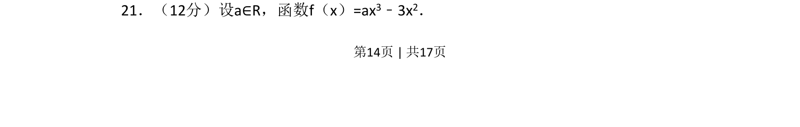
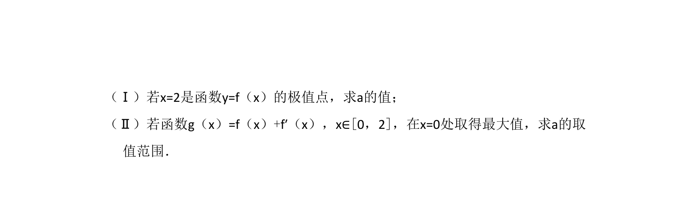
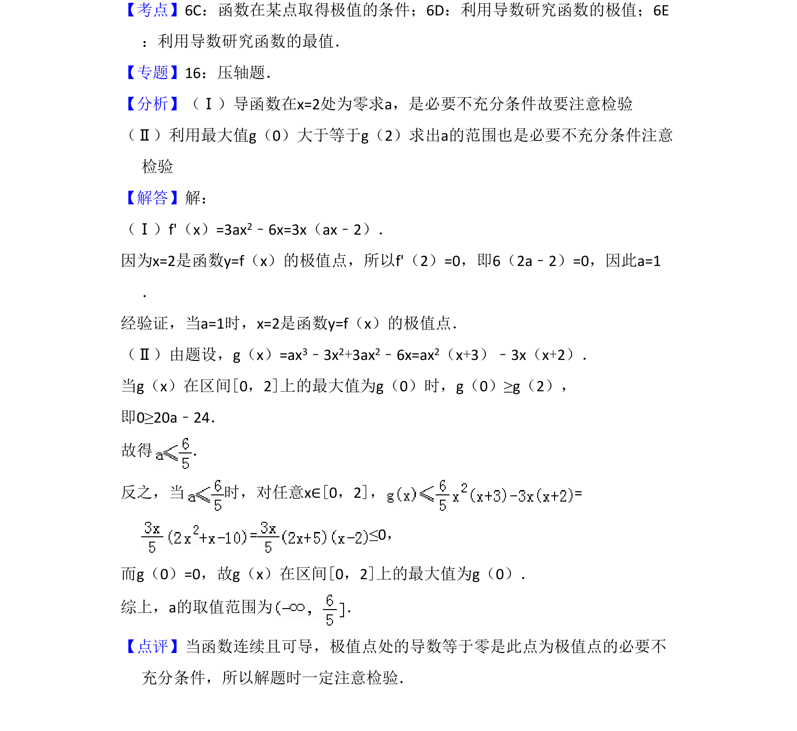

考点：导数 极值 函数
导数
极值
函数


f(x)=ax³-3x²，由极值点条件求a，再利用导数研究g(x)=f(x)+f'(x)在[0,2]最大值点为x=0时a的取值范围。

📄 原 PDF 第 14 页：素材/真题/吉林/2008-2024·（吉林）数学高考真题/2008年高考数学试卷（文）（全国卷Ⅱ）（解析卷）.pdf
素材/真题/吉林/2008-2024·（吉林）数学高考真题/2008年高考数学试卷（文）（全国卷Ⅱ）（解析卷）.pdf